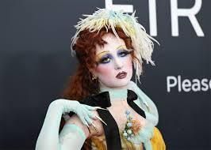
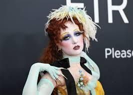
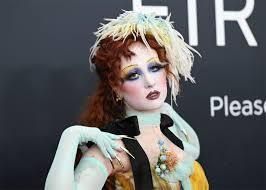

Breve biografía: Kayleigh Rose Amstutz, conocida por su nombre artístico Chappell Roan, es una cantante y compositora estadounidense. Su música está inspirada en el synth pop de los años 80 y éxitos pop de principios de los años 2000. Su estética está fuertemente influenciada por las drag queens y la industria del circo.


Chappell Roan en el rodaje de “The Subway”.

Presentación en vivo durante la gira “Midwest Princess”.

"picture you in glasgow . ݁₊ ⋆˙⟡".